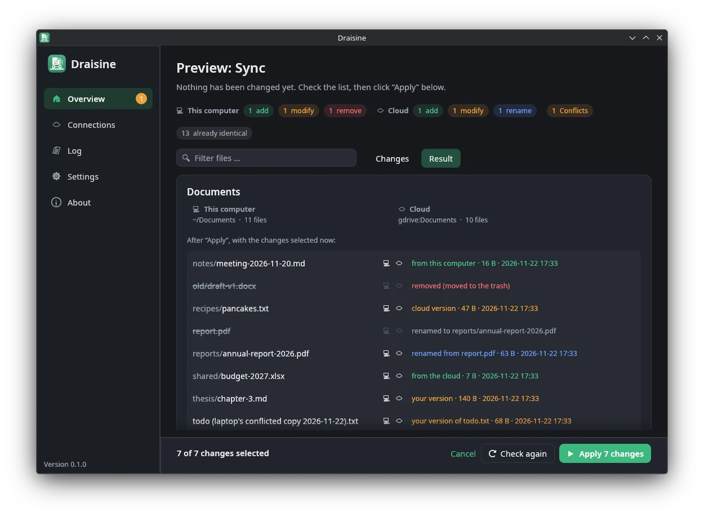

See the result before anything changes
The preview shows every file after the sync and where its content will come from: this computer, the cloud, a rename, or a conflict copy. Deleted files are crossed out and go to the trash.


Four ways to sync
Pick a folder on your computer and a folder in the cloud. Then choose what should happen.
Diff
See what differs between local and remote, side by side. Text files get a line-by-line comparison.
Pull
Make the local folder an exact copy of the cloud folder.
Push
Make the cloud folder an exact copy of the local folder.
Two-way & auto-sync
Changes on either side reach the other. Auto-sync runs in the background and only acts on its own when it's clear which side changed.
Built so you don't lose files
Sync tools that silently delete the wrong thing are how people lose work. Draisine is built around a few strict rules.
You confirm every unclear delete and overwrite
A preview lists each change with the reason, with checkboxes. Nothing destructive happens until you confirm, unless auto-sync is on and the change is unambiguous.
Deleted files go to the trash
Locally, old files go to the system trash. If that fails, nothing is touched. In the cloud, they can go to a backup folder instead.
Conflicts keep both versions
Changed on both sides? You get name (laptop's conflicted copy 2026-11-22).txt next to the original, like Dropbox does.
Auto-sync only acts when it's clear
Background sync deletes or overwrites a file only if just one side changed it and the other side is exactly as at the last sync. Anything else waits for you: the tray icon turns orange and you get a notification.
Stops on suspicious situations
A drive that isn't mounted, a folder that suddenly looks empty, or a mass deletion (25 % by default) makes it stop and warn you.
Checks content, not just dates
Same size and timestamp isn't enough. Without a verified sync state, files are compared by hash, and everything is checked again just before applying.
Every action is written to a daily log file that is never deleted, so you can always look up what happened.
How two-way sync decides
After each sync, Draisine remembers what both sides looked like. Next time, each side is compared with its own last state, so it can tell a deleted file from a new one.
| Local ↓ / Cloud → | unchanged | new or changed | deleted |
|---|---|---|---|
| unchanged | nothing | update local · asks* | delete local · asks*, to trash |
| new or changed | update cloud · asks* | same content: nothing otherwise: conflict, keep both | restore to cloud |
| deleted | delete in cloud · asks* | restore locally | nothing |
* Auto-sync does these on its own only when the file was in sync last time, the other side is exactly as it was then (same size and modification time), and the changed side is newer than recorded or was deleted. Anything else waits for you.
On the very first sync there is no saved state yet. Then nothing is ever deleted, and files that differ become conflicts. Renames are recognised by size and content hash and repeated on the other side instead of a delete plus a fresh upload.
Get started
Download the archive for your system and run it. The matching rclone is included, which does the actual transfer and supports more than 70 cloud services.
- DownloadGet the archive for Linux, Windows or macOS from the latest release.
- Unpack and runNo installer. Draisine appears in your system tray.
- Connect your cloudA setup assistant opens on first start. You sign in to your cloud in the browser.
- Choose foldersPick a local folder and a cloud folder, look at the preview, and sync.
Linux: works on KDE, and on GNOME with the AppIndicator extension. Prefer to build it yourself?
git clone https://github.com/hekori/draisine cd draisine cargo build --release # target/release/draisine
Why “Draisine”?
Karl Drais built his running machine in Mannheim in 1817. The name later stuck to the small rail handcars that shuttle back and forth between two points, just like your files between your computer and the cloud.